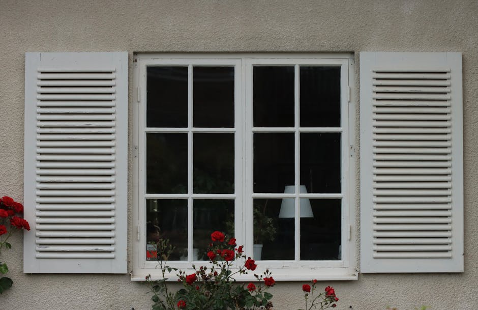
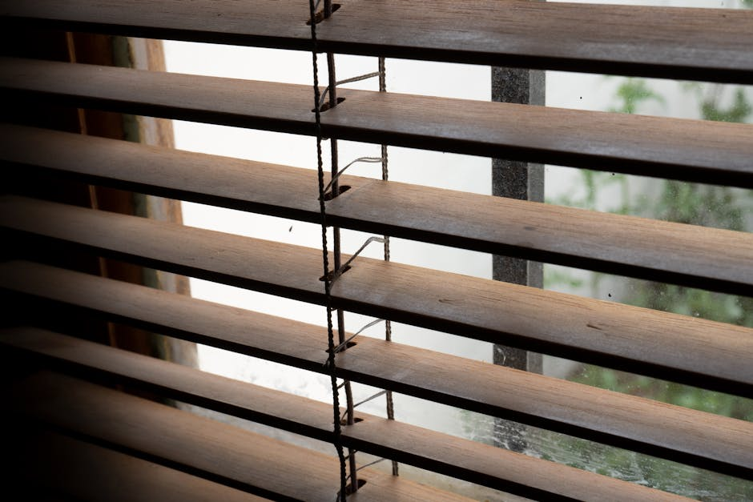

Control the flow of natural light with custom window treatments.
Transform your living spaces with premium plantation shutters, elegant custom drapes, and modern roller shades tailored to your exact style and privacy needs.

Crafting the Perfect Atmosphere
Elevating Austin homes with bespoke window designs.

Your Vision, Expertly Installed
At Blousyflow, we believe that the right window coverings do more than just block the sun—they complete your home's aesthetic and provide essential privacy. Drawing inspiration from top-tier providers like Southern Shutters Austin, we specialize in guiding homeowners toward the perfect custom blinds, shades, and shutters.
Whether you are searching for energy-efficient solutions for a sun-drenched living room or timeless elegance for your dining area, our curated selection ensures your windows are dressed to perfection. We focus on durable, high-quality materials that stand the test of time.
Our Premium Offerings
Discover the perfect balance of light control, privacy, and architectural beauty for every room.

Modern Roller Shades
Achieve a clean, minimalist look with our custom roller shades. Available in varying opacities from sheer to blackout, they offer effortless light management and sleek integration into any window frame.

Custom Blinds
Tailored to fit exact dimensions, our custom blinds come in premium wood, faux wood, and aluminum finishes. Experience superior durability and precise tilt control for optimal privacy.

Custom Drapes & Curtains
Add texture, warmth, and dramatic scale to your rooms with luxurious custom drapes. We offer an extensive fabric library to perfectly complement your interior design while providing excellent insulation.
Plantation Shutters
The ultimate in architectural elegance. Our plantation shutters are custom-built to seamlessly integrate with your window frames, offering unmatched energy efficiency, light control, and timeless Southern charm to any home.
Request a consultationWhat Homeowners Are Saying
"Blousyflow helped us find the perfect plantation shutters for our new Austin home. The quality of the materials and the precision of the fit transformed our living room completely."
— Sarah M., 2026
"We needed blackout roller shades for our master bedroom and custom drapes for the dining room. The guidance we received was exceptional. Highly recommend their window treatments!"
— James T., 2026
"Absolutely stunning custom blinds. The entire process from choosing the materials to understanding the installation requirements was seamless and professional."
— Emily R., 2026
Frequently Asked Questions
Expert answers for your window treatment needs.
What types of custom blinds do you offer?
We feature a comprehensive range of custom blinds including genuine wood, durable faux wood, and sleek aluminum options. Each blind is tailored to fit your window measurements precisely, ensuring maximum privacy and light control.
Are roller shades suitable for bedroom privacy?
Absolutely. Roller shades are highly versatile and come in blackout fabrics specifically designed to block exterior light, making them an ideal window treatment for bedrooms, nurseries, and media rooms.
How do plantation shutters impact energy efficiency?
Plantation shutters provide excellent insulation by creating a solid barrier against the glass when closed. This helps regulate indoor temperatures, keeping your home cooler in the intense Texas summer and warmer during the winter, potentially lowering energy costs.
Can I get custom drapes for oversized or unusually shaped windows?
Yes. Because all of our window treatments are custom-made, we can create stunning custom drapes for windows of virtually any size or shape, including high-ceiling living rooms, bay windows, and arched frames.
What are the best window treatments for high-humidity areas like bathrooms?
For bathrooms and kitchens, we highly recommend faux wood blinds or moisture-resistant synthetic plantation shutters. These materials mimic the look of real wood but are engineered to withstand high humidity without warping or cracking.
Request a Design Consultation
Connect with us to discover the perfect custom blinds and shades for your home. Serving Austin, TX and surrounding areas.